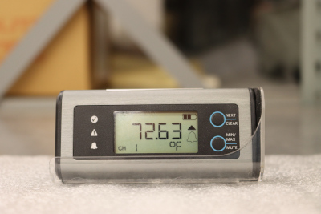

Temperature and Humidity Logging at the University Museum
The Museum records three kinds of environmental data: temperature (℉), percent humidity (%RH), and dew point (℉). These data are collected with EasyLog EL-SIE-2+ data loggers (Figure 1). See Section 1 for suggested ranges of temperature and relative humidity.

Guidelines for Temperature and Humidity
Garry Thomson’s The Museum Environment represented an important early work dealing with temperature, humidity, and dew point (along with light and pollutants). In terms of temperature, Thomson (1990, 268) suggests a Winter range of 64.5-68 (℉) and a Summer range of 73-77(℉). With respect to humidity, Thomson (1990, 119) writes:
“Choice of RH level depends on several factors but cannot go too far from 50 or 55% RH. An exception may be found in the very low winter temperatures of Canada and north-eastern Europe where attempts at humidification to this level may endanger the building. The tolerance usually quoted of ± 4 or 5% RH is based more on what can be expected of an air-conditioning plant than on what exhibits can actually stand without deterioration, which is not known in any detail.”
Thomson expected these values to be refined with further study.
In April 12-13, 2010 a seminar entitled “Rethinking the Museum Climate” was held by the Museum of Fine Arts (MFA), Boston and the Getty Conservation Institute at the MFA, Boston. A major thrust of the meeting was to rethink museums’ carbon footprint in light of climate change. Out of the meeting came a proposal to revise the standards developed in the early 20th century (Thomson 1990).
Later that same year, at the 2010 American Institute of Conservation (AIC) meeting the 3rd International Institute for Conservation of Historic and Artistic Works (IIC) Roundtable on “Dialogues for the new Century” held “The Plus/Minus Dilemma: The Way Forward in Environmental Guidelines” (transcript and video). The aim of this oft-cited discussion was to evaluate the existing standards for collections environments. If one can glean a consensus from the discussion, it was that many institutions struggle to remain within the previuosly established thresholds, and that these thresholds may need to be adjusted depending on the materials and the region. This seems generally consistent with Thomson (Thomson 1990).
The National Park Service’s Museum Handbook recommends that, where comfort of humans is a factor, most collections should be kept in conditions between 59-77 (℉) and 45-55% RH (Bacharach 2019, 4:22, 4:27). The manual further notes that it is important to avoid extreme changes in either temperature or RH.
The American Alliance of Museums, Museum Registration Manual (6th) (Simmons and Kiser 2020) chapter on “Preventative Care” (Bauer Kilgo 2020, 506) says:
Traditionally, a universal standard of 70°F ± 5° and 50 percent relative humidity ±5 percent was encouraged for all collection storage. Although this standard was once a good rule of thumb, the emphasis now is on establishing set points for temperature and relative humidity that are based on the materials the collection objects are composed of and what the building heating and cooling systems can reasonably maintain with minimal fluctuations in a particular geographic area.
Additional Links
- Environmental Guidelines at the AIC Wiki: This page has a fascinating history of HVAC systems.
- The Getty Conservation Institute’s Resources on Collection Environments provides links to a number of reports and offers a list of research articles.
- The Smithsonian’s Museum Conservation Institute’s “Culmination of 20 Years of Green, Energy Savings Research” provides an interesting perspective.
- Mecklenburg, M. F. “Determining the Acceptable Ranges of Relative Humidity and Temperature in Museums and Galleries,” Smithsonian Museum Conservation Institute. 2007.
References
Citation
@online{craig2022,
author = {Nathan Craig},
title = {Temperature and {Humidity} {Logging} at the {University}
{Museum}},
date = {2022-05-20},
langid = {en},
abstract = {This document contains information on the NMSU University
Museum’s environmental data loggers. Data are presented as a
comparison across rooms and by logger.}
}